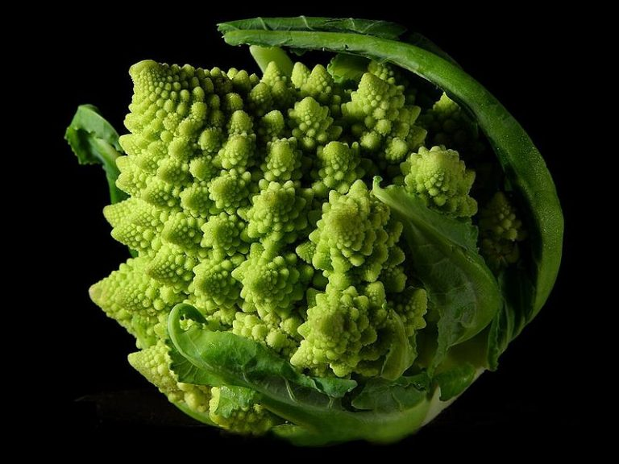
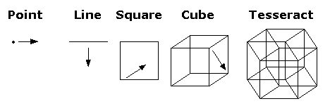
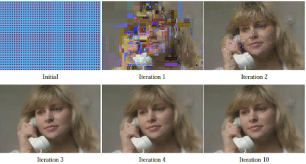

Clouds are not spheres, mountains are not cones, coastlines are not circles, and bark is not smooth, nor does lightning travel in a straight line: these all are fractals.
Benoit Mandelbrot - The Fractal Geometry of Nature (1982)
Frattali in natura:
il cavolo romano



Autosimilarità:
i frattali sono sempre simili a sé stessi a qualunque ingrandimento li si osservi.
Triangolo di Sierpinski

Autosimilarità del triangolo di Sierpinski

La dimensione di Hausdorff

Una dimensione può essere caratterizzata da un qualunque numero reale positivo.
La dimensione di Hausdorff di un frattale è una frazione, ad esempio la dimensione del triangolo di Sierpinski è pari a ln3/ln2 = 1.585…
Compressione frattale

La compressione frattale è un tipo di compressione di immagini digitali a perdita di dato che si basa sulla geometria frattale
La musica frattale
Sitografia
- Aulascienze scuola Zanichelli
- Tesi laurea Martina Creddo università di Bologna
- Smithsonian - Fractals made of snow
- BBC - How Mandelbrot's fractals changed the world
- A tasty pixel - Fractal image coding
- Fractal foundation
- Bowerbird studios - Dimitry Kormann, Fratal music
- Brothers technology - Fractal music